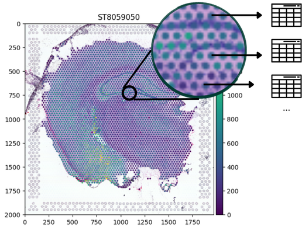
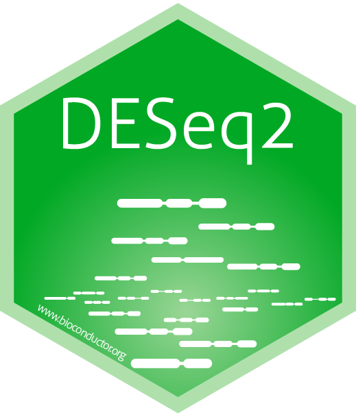
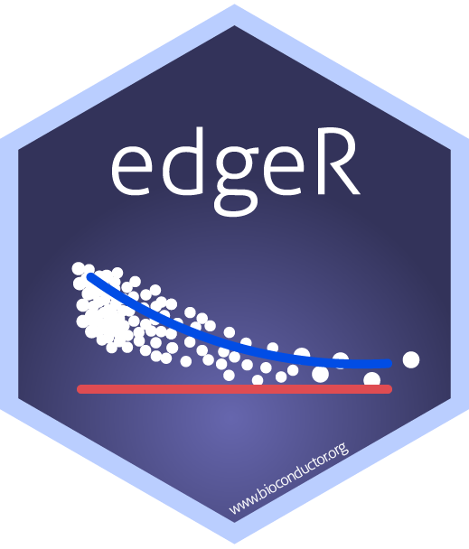
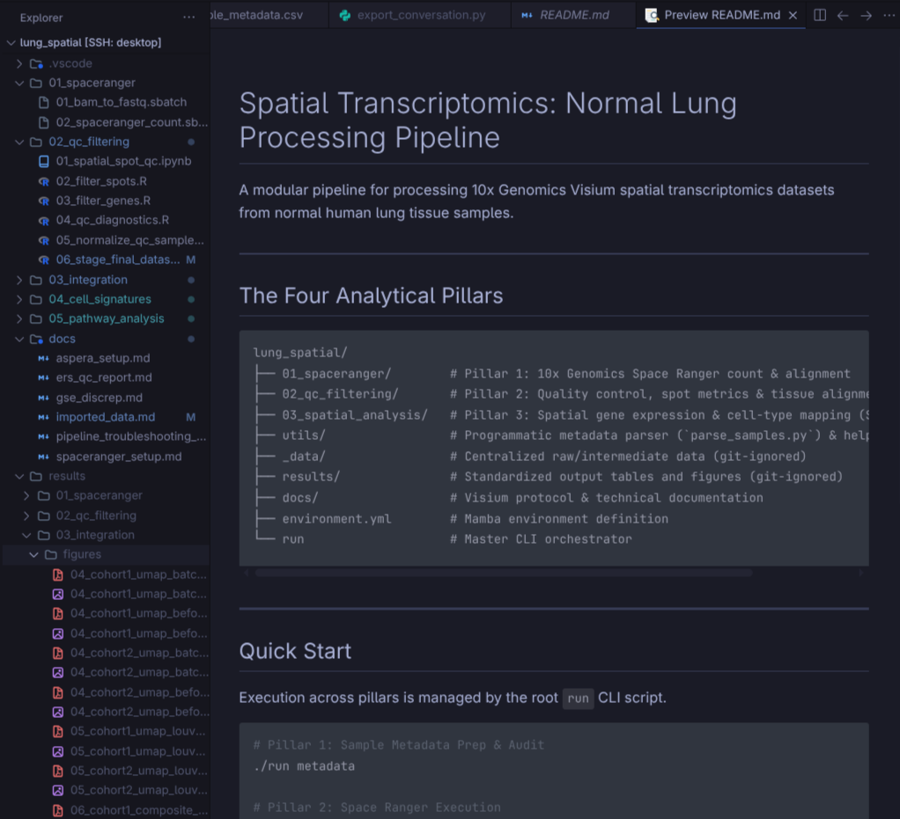
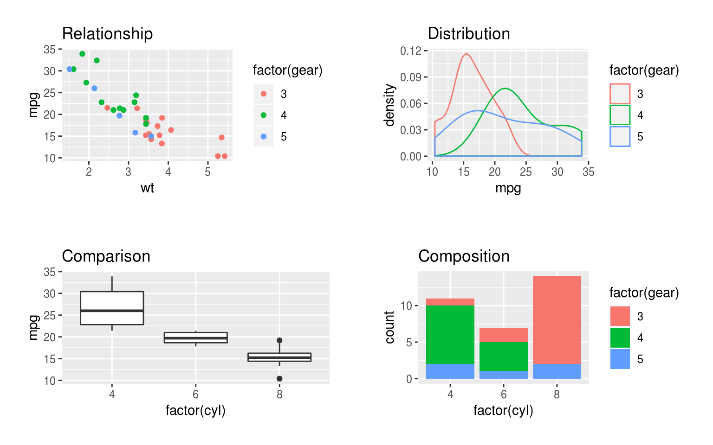

Syntax, Variables, Atomic Types & Transcriptomic Math
Modern cancer transcriptomics produces massive, high-dimensional datasets:
How raw transcriptomic data looks in a computational matrix
| Gene ID | Tumor_P1 | Tumor_P2 | Normal_P1 | Normal_P2 |
|---|---|---|---|---|
| TP53 | 12,450 | 14,210 | 8,920 | 9,150 |
| BRCA1 | 3,420 | 4,890 | 1,230 | 1,410 |
| EGFR | 45,820 | 38,100 | 5,420 | 6,100 |
| GAPDH | 102,400 | 98,350 | 95,800 | 99,200 |
| (… 19,996 more) | … | … | … | … |
Note
Notice how GAPDH (housekeeping) is steady across all samples, while oncogenes like EGFR are specifically amplified in Tumor samples!
Modern cancer transcriptomics produces massive, high-dimensional datasets:

Source: spatialdata.scverse.org
SEPT2 \(\rightarrow\) 2-SepMARCH1 \(\rightarrow\) 1-Mar



ggplot2 and specialized spatial graphics engines.
Source: benwhalley.github.io
<-)In R, code executes sequentially from top to bottom.
Note
print() wraps strings in quotes "" and outputs a vector index [1].
In R, bare expressions evaluate and print their result automatically.
Tip
You do not need to wrap math inside print().
cat() 😺cat() combines text and numbers smoothly without surrounding quotes:
Note
Notice how cat() strips quotation marks and vector index [1] for clean terminal messages!
") or parenthesis ()), R does not crash.+ prompt!💡 How to Rescue Your Console
Press Escape or Ctrl + C to cancel and recover your prompt >!
Golden Rule: Quotes "" and parentheses () must always match in pairs.
"Preprocessing..."cat(): "Total Spots:" and 4992 + 1200.In 10x Visium, each standard capture area contains exactly 4,992 barcoded spots!
<-)<-)A variable is a named storage container in your computer’s memory.
💡 Why not =?
While = works, R and Bioconductor standards strictly recommend <- for variable assignment, reserving = for passing arguments inside functions!
<-)_), and periods (.)1gene causes a syntax error!cell count is invalid!Gene_A, gene_A, and gene_a are 3 completely different variables in memory!<-)<-)💡 Why this works
R variable names cannot contain math operators like -. Use snake_case instead.
<-)<-)💡 Why this works
R requires variable names to begin with an alphabetic letter.
<-)<-)💡 Why this works
target_gene and Target_gene refer to two completely different memory locations!
<-)In standard bioinformatics and tidy R workflows, use snake_case (all lowercase words separated by underscores):
Tip
Using lowercase with underscores avoids accidental typos, prevents case-sensitivity errors, and keeps pipelines clean!
<-)4992 total capture spots. Assign this number to a variable named total_spots.3820 spots are covered by tissue. Assign this to tissue_spots.background_spots.cat(): "Background spots:" and background_spots.<-)Tip
In spatial analysis, tissue spots capture cellular mRNA, while background spots are filtered out during quality control!
<-)Every piece of data in R belongs to a specific atomic type:
| Type | What It Stores | Real Genomics Example |
|---|---|---|
numeric |
Decimals / Floats (default in R) | log2_fc <- 2.45 |
integer |
Discrete counts / whole numbers (L) |
raw_reads <- 12450L |
character |
Text strings ("") |
gene_name <- "TP53" |
logical |
Boolean (TRUE/FALSE, no quotes!) |
is_de_gene <- TRUE |
Note
In R, numbers default to numeric (double). To explicitly store an integer (e.g., spot index or raw read count), append an L like 4992L.
Inspect any variable with typeof() or class():
Combining different types forces everything to the most flexible type (character):
Vectors can hold only one type! If you mix types, R silently coerces everything to the most flexible type (character):
💥 Why did sum() fail?
Because "NA" is text, R converted all numbers into character strings ("120", "450", "310"). R cannot perform math on strings!
NA (Not Available)NA represents missing data, unmeasured spots, or biological dropouts.is.na() (never == NA):💡 Gotcha: Never use == NA
x == NA returns NA because comparing anything to an unknown is unknown. Always use is.na(x)!
NaN (Not a Number)NaN stands for “Not a Number”.is.nan():Tip
In single-cell normalization, dividing a gene count of 0 by an empty spot’s library size of 0 yields NaN.
Inf & -Inf (Infinity)Inf and -Inf represent values exceeding numerical bounds.🧬 Transcriptomic Connection
Gene count matrices contain many zeros. Taking \(\log_2(0) = -\infty\) crashes statistical pipelines — which is why we add a pseudo-count (\(\log_2(\text{count} + 1)\))!
<-)| Operator | Action | Real Genomics Example |
|---|---|---|
+ |
Addition | tot_reads <- 12000 + 3500 |
- |
Subtraction | bg_spots <- 4992 - 3820 |
* |
Multiplication | mito_pct <- 0.074 * 100 |
/ |
Division | depth_scale <- 45 / 15000 |
^ |
Exponentiation | fc <- 2^3 (8-fold change) |
%% |
Modulo (remainder) | batch_rem <- 10 %% 3 (1) |
%/% |
Integer division | cohort_grp <- 10 %/% 3 (3) |
Note
In R, %% returns the remainder (e.g. testing for even/odd samples), while %/% performs integer division discarding fractions.
Tip
In transcriptomics, \(\log_2\) is standard because a 1-unit increase represents a doubling (2-fold increase) in gene expression!
Which gene is actually expressed at a higher relative rate?
\[\text{CPM} = \left( \frac{\text{Gene Read Count}}{\text{Total Library Size}} \right) \times 10^6\]
💡 The Normalization Takeaway
Raw counts deceive! Although Spot A has more reads (450 vs 200), Spot B actually expresses the gene at 2.2× higher rate once normalized for sequencing depth.
+ 1 Solution+ 1): \[\log_2(0 + 1) = \log_2(1) = 0\]<-)getwd():
list.files() / dir():
head():
head() previews the first 5 safely."data\counts.csv"\ is an escape character (like \n for newline).\c and immediately crashes: Error: '\c' is an unrecognized escape!<-)Time to Code!
01a1_R_Syntax_and_Variables.ipynbTranscriptomics Data Analysis Track • Module 1a